ThreatLocker IT Infrastructure Assessment Prep — hands-on, zero-dependency interactive visualizations. These are standalone pages (linked from lessons, not embedded) plus eight more SMIL-animated SVG diagrams. Everything runs fully offline.
Drag the borrowed-bits slider and watch a /16 address space split into 2ⁿ subnets with animated segmentation — click any subnet for live network, broadcast, usable-range, mask, and wildcard math.
Open interactive →Pick RAID 0/1/5/6/10, then click disks to kill them. See exactly which failures each level survives — and watch RAID 5/6 rebuild onto the hot spare with an animated parity recompute.
Open interactive →Hover a VLAN to trace its traffic across the 802.1Q trunk while other VLANs dim. Shut the trunk down to watch every broadcast domain split in two — then fire test broadcasts per VLAN.
Open interactive →Step through the six-message ticket exchange with play/pause/step/back controls — each step explains its purpose, shows the actual message payloads, and flags the exam angle.
Open interactive →
SYN → SYN-ACK → ACK with animated packets and live sequence/acknowledgment numbers, ending in the ESTABLISHED badge.

AS-REQ/AS-REP → TGS-REQ/TGS-REP → AP-REQ across Client, KDC, and file server — six messages, zero passwords on the wire.

All seven layers with a payload growing TCP, IP, and Ethernet headers as it descends — Segment → Packet → Frame → Bits.

BPDU exchange, root-bridge election by lowest Bridge ID, Root/Designated port roles, and a redundant port cycling to Forwarding.

Local → Site → Domain → OU apply in order over one setting; each layer overwrites the last until the OU wins.

A week of FULL, differential, and log backups on an unbroken LSN chain, then the restore: FULL → DIFF → LOGs, NORECOVERY until the end.

Hand-typed static IPs crawl in and collide on a duplicate; the DHCP server leases a whole row in seconds — pain vs automation.

Two packets walk one rule list top-down: one dies at the DENY rule, the other reaches the ALLOW — order is everything.